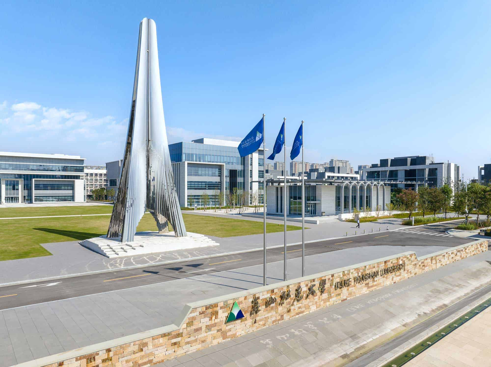

Location
Kunshan, Jiangsu, China
About the University
This calendar prototype reflects the practical needs of a world-class liberal arts university community.
Duke Kunshan University is located in Kunshan, China. It is an interdisciplinary liberal arts university founded in 2013 through a partnership between Duke University and Wuhan University.
The institution serves an international campus community and supports academic planning, campus programming, and student life through clear communication of key dates and events.

Kunshan, Jiangsu, China
2013
Interdisciplinary liberal arts education
Duke University and Wuhan University